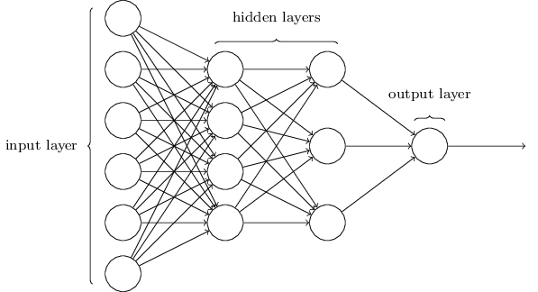

Mark Brooke Hon.BSc MAIP
DPhil Candidate (Oncology) at the University of Oxford
Research Scientist Intern at Mirada Medical
Oxford, UK
Skills
Radiotherapy physics
Computational physics
Optimisation and inverse problems
Reconstruction
Programming
Monte Carlo simulation
Programming languages & toolkits
C++, Python, MATLAB, Javascript, HTML & CSS, LaTeX, Tcl, Geant4, TOPAS
Languages
English (native), French (limited working proficiency)
Radiobiological Optimisation for Particle Therapy
My PhD research focuses on incorporating radiobiological considerations into treatment planning for proton and heavy ion therapies. Conventional radiation therapy, using x-rays, is not able to achieve the same targeted effects that particles such as protons can offer. Upon these particles entering the patient from an external accelerator nozzle, energy is deposited and cells receive a radiation dose. We can tune the beam parameters such that the tumour receives a conformal and lethal dose, while the surrounding healthy tissues receive only a small amount of residual dose. However, this nice dose deposition characteristic does not tell the full story. Particles induce different radiobiological effects when they interact with biological material, which must be better understood before proceeding with treatment.
My work models some of these radiobiological effects and incorporates them directly into an automated optimisation algorithm for planning particle therapy treatments. Such an algorithm will allow for fast treatment-plan creation and reduced biological uncertainties, providing the potential to improve both treatment quality and clinical workflow.
Proton Computed Tomography
Computed tomography (CT) simulation is an important stage of the radiotherapy planning process. Slice-by-slice images of the patient's anatomy are used to delineate structures relevant to radiotherapy, such as tumoural volume, at which the dose is targeted, and surrounding healthy tissues, for which the dose is reduced as much as practically possible. The values of pixels (or in 3D, voxels) in the image encode the attenuation of x-rays, which enables the tuning of machine parameters such that the treatment prescribed by the oncologist can be achieved. Physics-based models and computer software are used in this phase.
Proton therapy planning similarly requires knowledge of how different tissues slow down (and even stop) the therapeutic protons as they traverse the body. Using regular CT images, reconstructed from x-ray data, to infer this information requires a calibration that can lead to errors in proton range estimation. Use of protons as the imaging particle instead of x-rays bypasses the need for calibration. This is the concept of proton CT.
Automated Radiotherapy Planning using Neural Networks
There has recently been much interest in the application of machine learning techniques to the field of medicine, which many believe will induce a paradigm shift in clinical workflow, diagnosis, and treatment. For example, convolutional neural networks, a workhorse for image classification, can now be trained to automatically perform tumour segmentation in seconds, drastically speeding up the conventionally human-operated task of contouring.

Planning a radiotherapy treatment, from a physics perspective, involves optimising beam fluence maps through intensity modulation, to achieve the desired dose distribution. A penalisation can be applied to voxels in the 3D dose map that do not meet the constraints imposed by the physician. This optimisation procedure, which requires both computation time and human intervention to continually re-adjust parameters, can take hours. Using machine learning, the entire procedure may be able to generate a suitable plan in a small fraction of that time.